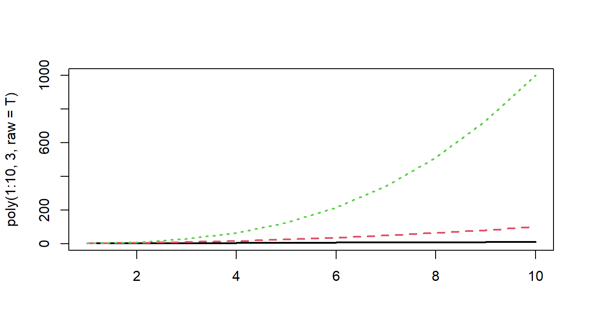
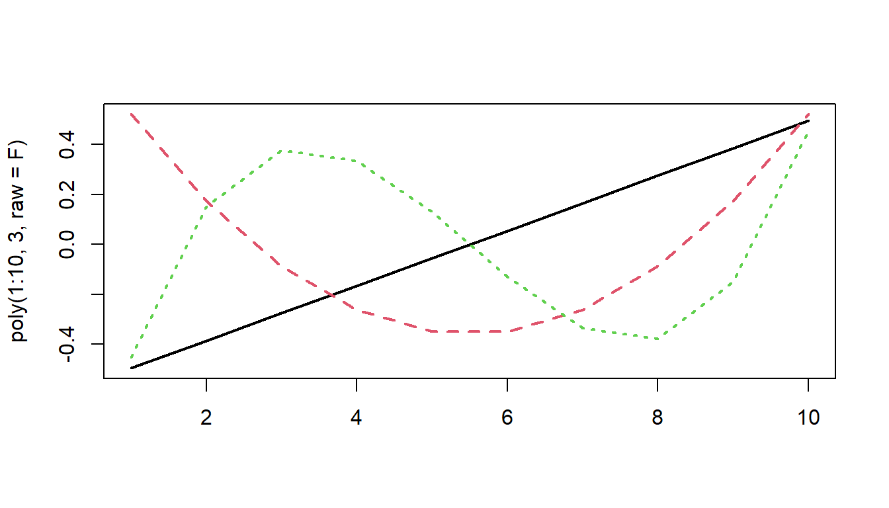

syndat <- read_csv("https://uoepsy.github.io/data/msmr_synapticdens.csv")
ggplot(syndat, aes(x=age,y=syndens))+
geom_point(size=2)+
labs(x="Age (years)",y="Synaptic Density")3A: Polynomial Growth
This reading:
- The basics of modelling non-linear change via polynomial terms.
- An example with MLM
For additional reading, Winter & Wieling, 2016 is pretty good (mainly focus on sections 1-3)
We have already seen in the last couple of weeks that we can use MLM to study something ‘over the course of X’. This might be “over the course of adolescence” (i.e. y ~ age), or “over the course of an experiment” (y ~ trial_number). The term “longitudinal” is commonly used to refer to any data in which repeated measurements are taken over a continuous domain. This opened up the potential for observations to be unevenly spaced, or missing at certain points.
It also, as will be the focus of this week, opens the door to thinking about how many effects of interest may display patterns that are non-linear. There are lots of techniques to try and summarise non-linear trajectories, and here we are going to focus on the method of including higher-order polynomials as predcitors.
Linear vs Non-Linear
Forget about multilevel models for a little while, as we can think about this in the single level world.
Suppose we had collected the data on 74 children, and measured the number of pathways in their brains (“synaptic density”), see Figure 1. We wanted to fit a model to predict synaptic density based on the values of age.
We’ll use our old friend linear regression, \(y = b_0 + b_1 \cdot x + \varepsilon\).
linmod <- lm(syndens ~ age, data = syndat)We’ll get out some estimated coefficients, some \(t\) statistics, and some p-values:
- The intercept: \(b_0\) = 4.39, t(72)=8.17, p < .001
- The estimated coefficient of x: \(b_1\) = 0.3, t(72)=8.17, p < .001
Job done? Clearly not - we need only overlay model upon raw data (Figure 2) to see we are missing some key parts of the pattern.
We can see this in our residuals!!
Let’s just do a quick plot(model) for some diagnostic plots of my linear model:
plot(linmod)
Does it look like the residuals are independently and identically distributed? Not really. We can see that the residuals do not have a constant mean of zero across the fitted values. This makes sense, because the line is below all of the points for people 5 years old, and then it’s above all the points when \(age<3\) and \(age>15\). We need to find some way of incorporating the clearly non-linear relationship between the two variables into our model.
What is a polynomial?
For many purposes, extending the linear model to include higher-order terms can allow us to usefully summarise a non-linear relationships between two variables. For instance, fitting models with linear and quadratic terms (\(y\) = \(b_0 + b_1 \cdot x \ + b_2 \cdot x^2 + \varepsilon\)) and extending these to cubic (\(y\) = \(b_0 + b_1 \cdot x \ + b_2 \cdot x^2 + b_3 \cdot x^3 + \varepsilon\)) (or beyond), may aid in modelling nonlinear patterns, as in Figure 3
Polynomials are mathematical expressions which involve a sum of powers. For instance:
- \(y = 4 + x + x^2\) is a second-order polynomial as the highest power of \(x\) that appears is \(x^2\)
- \(y = 9x + 2x^2 + 4x^3\) is a third-order polynomial as the highest power of \(x\) that appears is \(x^3\)
- \(y = x^6\) is a sixth-order polynomial as the highest power of \(x\) that appears is \(x^6\)
How does a polynomial term capture non-linearity?
Suppose we have the model \(y = b_0 + b_1 \cdot x + \varepsilon\). Let’s take a sequence of values for \(x\), and write out the model equation for the predicted values \(\hat y\) from this model.
We can see that for each row, the predicted value increases by \(b_1\). In the column with example coefficients, each row increases by 1.
| x | predicted y | predicted y if e.g. \(b_0=1\) and \(b_1=1\) |
|---|---|---|
| 0 | \(b_0 + b_1 \cdot 0\) | \(1+1 \cdot 0 = 1\) |
| 1 | \(b_0 + b_1 \cdot 1\) | \(1+1 \cdot 1 = 2\) |
| 2 | \(b_0 + b_1 \cdot 2\) | \(1+1 \cdot 2 = 3\) |
| 3 | \(b_0 + b_1 \cdot 3\) | \(1+1 \cdot 3 = 4\) |
| … | … | … |
Now let’s do the same for the model with the quadratic term in, \(y = b_0 + b_1 \cdot x + b_2 \cdot x^2 + \varepsilon\).
We can see now that each row doesn’t increase by the same amount! The increases are 2, 4, 6 for our example coefficients.
| x | predicted y | predicted y if e.g. \(b_0=1\), \(b_1=1\) and \(b_2=1\) |
|---|---|---|
| 0 | \(b_0 + b_1 \cdot 0 + b_2 \cdot 0^2\) | \(1+1 \cdot 0 + 1 \cdot 0^2 = 1\) |
| 1 | \(b_0 + b_1 \cdot 1 + b_2 \cdot 1^2\) | \(1+1 \cdot 1 + 1 \cdot 1^2 = 3\) |
| 2 | \(b_0 + b_1 \cdot 2 + b_2 \cdot 2^2\) | \(1+1 \cdot 2 + 1 \cdot 2^2 = 7\) |
| 3 | \(b_0 + b_1 \cdot 3 + b_2 \cdot 3^2\) | \(1+1 \cdot 3 + 1 \cdot 3^2 = 13\) |
| … | … | … |
This is because the value of \(x^2\) is bigger for bigger values of \(x\). Hence the difference between predicted values of \(y\) when \(x=9\) and \(x=10\) is much bigger than it is between \(x=0\) and \(x=1\).
You can see the linear and the quadratic lines we just talked about in the figure below:
As the order of polynomials increases, we tend to be less interested in these terms in our model. Linear change is the easiest to think about: are things going up? or down? (or neither?). Quadratic change is the next most interesting, and it may help to think of this as the “rate of change”. For instance, in Figure 4, it is the quadratic term which differs between the two groups trajectories.
Positive and negative coefficients for quadratic terms
One thing to focus on is the sign of the quadratic coefficient. When a quadratic term is positive, the curve is \(\cup\) shaped, and when it is negative, the curve is \(\cap\) shaped. To help illustrate, consider what each value from -10 to 10 is when squared (they’re all positive, as in the RH side of Figure 5)
Raw Polynomials
There are two types of polynomial we can construct. “Raw” (or “Natural”) polynomials are the straightforward ones that you would expect (example in the table below), where the original value of \(x\) is squared/cubed.
| \(x\) | \(x^2\) | \(x^3\) |
|---|---|---|
| 1 | 1 | 1 |
| 2 | 4 | 8 |
| 3 | 9 | 27 |
| 4 | 16 | 64 |
| 5 | 25 | 125 |
| … | … | … |
We can quickly get these in R using the poly() function. As we want to create “raw” polynomials, we need to make sure to specify raw = TRUE or we get something else (we’ll talk about what they are in a second!).
poly(1:10, degree = 3, raw=TRUE) 1 2 3
[1,] 1 1 1
[2,] 2 4 8
[3,] 3 9 27
[4,] 4 16 64
[5,] 5 25 125
[6,] 6 36 216
[7,] 7 49 343
[8,] 8 64 512
[9,] 9 81 729
[10,] 10 100 1000
attr(,"degree")
[1] 1 2 3
attr(,"class")
[1] "poly" "matrix"Let’s now use these with our example data we had been plotting above.
First lets add new variables to the dataset, which are the polynomials of our \(x\) variable:
syndat <-
syndat |>
mutate(
# poly1 is the first column
poly1 = poly(age, degree = 3, raw = TRUE)[,1],
# poly2 is the second
poly2 = poly(age, degree = 3, raw = TRUE)[,2],
# poly3 is the third
poly3 = poly(age, degree = 3, raw = TRUE)[,3]
)And now lets use them in our model as predictors:
cubicmod <- lm(syndens ~ poly1 + poly2 + poly3, data = syndat)
other ways to get polynomials into the model
As we’re working with raw polynomials, we could just do:
syndat |>
mutate(
poly1 = age,
poly2 = age^2,
poly3 = age^3
)Or we could even just specify the calculations for each term inside the call to lm():
lm(syndens ~ age + I(age^2) + I(age^3), data = syndat)Or even use the poly() function:
lm(syndens ~ poly(age, degree=3, raw=TRUE), data = syndat)
A handy function from Dan
Dan has a nice function that may be handy. It adds the polynomials to your dataset for you:
# import Dan's code and make it available in our own R session
# you must do this in every script you want to use this function
source("https://uoepsy.github.io/msmr/functions/code_poly.R")
syndat <- read_csv("https://uoepsy.github.io/data/msmr_synapticdens.csv")
syndat <- code_poly(df = syndat, predictor = 'age', poly.order = 3,
orthogonal = FALSE, draw.poly = FALSE)
head(syndat)# A tibble: 6 × 6
age syndens age.Index poly1 poly2 poly3
<dbl> <dbl> <dbl> <dbl> <dbl> <dbl>
1 0.1 0.615 1 0.1 0.01 0.001
2 0.2 0.908 2 0.2 0.04 0.008
3 0.6 0.1 3 0.6 0.36 0.216
4 0.7 1.81 4 0.7 0.49 0.343
5 0.9 1.44 5 0.9 0.81 0.729
6 1 0.615 6 1 1 1 Just to see it in action, let’s take a look at the predicted values from our model.
Take for instance, the 9th row below. The predicted value of y (shown in the .fitted column) is:
\(\hat y_9 = b_0 + b_1 \cdot x_9 + b_2 \cdot x^2_9 + b_3 \cdot x^3_9\)
\(\hat y_9 = b_0 + b_1 \cdot 2 + b_2 \cdot 4 + b_3 \cdot 8\)
\(\hat y_9 = -1.843 + 3.375 \cdot 2 + -0.332 \cdot 4 + 0.0097 \cdot 8\)
\(\hat y_9 = 3.66\).
library(broom)
augment(cubicmod) # A tibble: 74 × 10
syndens poly1 poly2 poly3 .fitted .resid .hat .sigma .cooksd .std.resid
<dbl> <dbl> <dbl> <dbl> <dbl> <dbl> <dbl> <dbl> <dbl> <dbl>
1 0.615 0.1 0.01 0.001 -1.51 2.12 0.170 1.62 0.104 1.42
2 0.908 0.2 0.04 0.008 -1.18 2.09 0.155 1.63 0.0886 1.39
3 0.1 0.6 0.36 0.216 0.0651 0.0349 0.109 1.65 0.0000155 0.0226
4 1.81 0.7 0.49 0.343 0.361 1.45 0.0992 1.64 0.0240 0.933
5 1.44 0.9 0.81 0.729 0.933 0.510 0.0829 1.65 0.00239 0.326
6 0.615 1 1 1 1.21 -0.596 0.0759 1.65 0.00294 -0.379
7 0.615 1.6 2.56 4.10 2.75 -2.13 0.0465 1.63 0.0217 -1.33
8 0.310 1.7 2.89 4.91 2.98 -2.67 0.0433 1.62 0.0316 -1.67
9 1.21 2 4 8 3.66 -2.45 0.0361 1.62 0.0217 -1.52
10 2.19 2.1 4.41 9.26 3.87 -1.68 0.0343 1.64 0.00968 -1.04
# ℹ 64 more rowsIf we plot the predictions with poly1 on the x-axis (poly1 is just the same as our age variable with a different name!), we can see that we are able to model a non-linear relationship between y and x (between synaptic density and age), via a combination of linear parameters!
library(broom)
augment(cubicmod, interval="confidence") |>
ggplot(aes(x=poly1))+
geom_point(aes(y=syndens),size=2,alpha=.3) +
geom_line(aes(y=.fitted),col="darkorange") +
geom_ribbon(aes(ymin=.lower,ymax=.upper),fill="darkorange", alpha=.2)+
labs(x="age") # our x-axis, "poly1", is just age! Now lets look at our coefficients:
summary(cubicmod)...
Coefficients:
Estimate Std. Error t value Pr(>|t|)
(Intercept) -1.842656 0.704193 -2.617 0.0109 *
poly1 3.375159 0.345570 9.767 1.06e-14 ***
poly2 -0.331747 0.044664 -7.428 2.06e-10 ***
poly3 0.009685 0.001614 6.001 7.79e-08 ***
---With polynomials the interpretation is a little tricky because we have 3 coefficients that together explain the curvy line we see in Figure 6, and these coefficients are all dependent upon one another.
(Intercept)= When all predictors are zero, i.e. the synaptic density at age 0.
poly1coefficient = The instantaneous change in \(y\) when \(x=0\).poly2coefficient = Represents “rate of change of the rate of change” at \(x=0\). In other words, the curvature at \(x=0\).
poly3coefficient = Represents how the curvature is changing. It gets more abstract as the order of polynomials increase, so the easiest way to think about it is “the wiggliness”
I’ve tried to represent what each term adds in Figure 7. The intercept is the purple point where age is zero. The poly1 coefficient is represented by the dashed blue line - the tangent of the curve at age zero. The poly2 coef, rperesented by the dashed green line, is how the angle of the blue line is changing at age zero. Finally, the poly3 coefficient tells us how much this curvature is changing (which gets us to our dashed orange line).
Note that these interpretations are all dependent upon the others - e.g. the interpretation of poly2 refers to how the angle of poly1 is changing.
Orthogonal Polynomials
The poly() function also enables us to compute “orthogonal polynomials”. This is the same information as the raw polynomials, re-expressed into a set of uncorrelated variables.
Raw polynomials are correlated, which is what results makes their interpretation depend upon one another. For example, if we take the numbers 1,2,3,4,5, then these numbers are by definition correlated with their squares 1,4,9,16,25. As we increase from 1 to 5, we necessarily increase from 1 to 25.
However, if we first center the set of numbers, so that 1,2,3,4,5 becomes -2,1,0,1,2, then their squares are 4,1,0,1,4 - they’re not correlated!
Orthogonal polynomials essentially do this centering and scaling for \(k\) degrees of polynomial terms.
So while raw polynomials look like this:
matplot(poly(1:10, 3, raw=T), type="l", lwd=2)
Orthogonal polynomials look like this:
matplot(poly(1:10, 3, raw=F), type="l", lwd=2)
This orthogonality allows us to essentially capture express the linear trend, curvature, and ‘wiggliness’ of the trajectory independently from one another, rather than relative to one another.
Ultimately, models using raw polynomials and using orthogonal polynomials are identical, but the coefficients we get out represent different things.
Let’s overwrite our poly variables with orthogonal polynomials, by setting raw = FALSE:
syndat <-
syndat |>
mutate(
poly1 = poly(age,degree = 3, raw=FALSE)[,1],
poly2 = poly(age,degree = 3, raw=FALSE)[,2],
poly3 = poly(age,degree = 3, raw=FALSE)[,3],
)And fit our model:
Ocubicmod <- lm(syndens ~poly1+poly2+poly3,syndat)
summary(Ocubicmod)Coefficients:
Estimate Std. Error t value Pr(>|t|)
(Intercept) 6.5917 0.1902 34.649 < 2e-16 ***
poly1 12.9161 1.6365 7.892 2.88e-11 ***
poly2 -14.3156 1.6365 -8.748 7.68e-13 ***
poly3 9.8212 1.6365 6.001 7.79e-08 ***
---The interpretation of the estimates themselves are not really very tangible anymore, because the scaling of the orthogonal polynomials has lost a clear link back to “age”.
As the polynomial terms are centered on the mean of age, the intercept is the estimated synaptic density at the mean age (the purple dot in Figure 8). The poly1, poly2 and poly3 coefficient represent the independent overall linear trend, centered curvature, and “wiggliness” of the relationship between synaptic density and age (as shown in the blue, green and orange lines in Figure 8 respectively).
Raw vs Orthognal
The two models we have seen, one with raw polynomials, and one with orthogonal polynomials, are identical.
For proof, compare the two:
anova(
lm(syndens ~ poly(age, 3, raw = TRUE), data = syndat),
lm(syndens ~ poly(age, 3, raw = FALSE), data = syndat)
)Analysis of Variance Table
Model 1: syndens ~ poly(age, 3, raw = TRUE)
Model 2: syndens ~ poly(age, 3, raw = FALSE)
Res.Df RSS Df Sum of Sq F Pr(>F)
1 70 187.47
2 70 187.47 0 -1.1369e-13 So why would we choose one vs the other?
The main reason is if we are interested in evaluating things relative to baseline, in which case raw polynomials allow us to do just that. If we are instead interested in evaluating the trends across the timecourse, then we would want orthogonal polynomials.
Consider two examples:
Example 1
A student advisor who meets with students as they start university wants to know about how happiness evolves over the course of students’ year at univeristy, and wonders if this is different between introverted and extraverted individuals.
In this case, they would want raw polynomials, so that they can assess whether the two personality types differ when they first come to University, and how this is likely to evolve from that point.
Example 2
A company has four stores across the UK, and they want to know if the stores have differed in how variable their earnings have been across the year.
In this case, looking at change relative to month 1 isn’t very useful. It would, for instance, tell us that the linear trend for store2’s earnings is upwards, whereas the linear trend for store 1 is flat. This makes store2 look better.
If we used orthogonal polynomials instead, we would see that the linear trend for store 2 is actually negative compared to store1.
Raw? Orthogonal?
For non-linear relationships, a good plot is usually the most important thing!
Example in MLM
Data: midlife_ape.csv
Previous research has evidenced a notable dip in happiness for middle-aged humans. Interestingly, this phenomenon has even been observed in other primates, such as chimpanzees.
The present study is interested in examining whether the ‘middle-age slump’ happens to a similar extent for Orangutans as it does for Chimpanzees.
200 apes (117 Chimps and 83 Orangutans) were included in the study. All apes were studied from early adulthood (10-12 years old for most great apes), and researchers administered the Happiness in Primates (HiP) scale to each participant every 3 years, up until the age of 40.
The data are available at https://uoepsy.github.io/data/midlife_ape.csv.
The dataset has already been cleaned, and the researchers have confirmed that it includes 117 Chimps and 83 Orangutans, and every ape has complete data (i.e. 10 rows for each ape). A data dictionary can be found in Table 1
| variable | description |
|---|---|
| apeID | Ape's Name (all names are chosen to be unique) |
| age | Age (in years) at assessment |
| species | Species (chimp v orangutan) |
| HiP | Happiness in Primate Scale (range 1 to 18) |
| timepoint | Study visit (1 to 10) |
Initial plots are hard see when we plot a different line for each ape:
mlape <- read_csv("https://uoepsy.github.io/data/midlife_ape.csv")
ggplot(mlape, aes(x=age,y=HiP))+
geom_line(aes(group=apeID,col=species),alpha=.3) +
scale_color_manual(values=c("grey40","darkorange")) +
facet_wrap(~species)What is often more useful for exploring is to plot the averages in y across values of x.
Here we can see some slight curvature - the chimps seem to have a notable dip in happiness at about 20 years old.
ggplot(mlape, aes(x=age,y=HiP, col=species))+
scale_color_manual(values=c("grey40","darkorange")) +
stat_summary(geom="pointrange")+
stat_summary(geom="line")
Note
These plots can be misleading, especially in the event of missing data or incomplete trajectories. For instance, suppose we had data on happy chimps when they are young and when they are old, but not in the middle of their lives. The average of all chimps at each data point would look non-linear!
This illusion would not fool our multilevel model, however, which estimates the average of the individual lines
The present study is interested in examining whether the ‘middle-age slump’ happens to a similar extent for Orangutans as it does for Chimpanzees.
We’re interested in the difference in curvature across adulthood between Chimps and Orangutans. This is a case where we’re not hugely interested in some specific point in time, so orthogonal polynomials might be easier.
Both age and timepoint here contain the same information, so we can use either to create our polynomials:
mlape <- mlape |>
mutate(
poly1 = poly(timepoint,2,raw=F)[,1],
poly2 = poly(timepoint,2,raw=F)[,2],
)And then we’ll fit our model.
We know we’re interested in the change in happiness across age, so our model is going to take the form:
lmer(HiP ~ age ..... But we’ve just said that we’re interested in the curvature of this, so we’re going to re-express age as the two parts, the linear and the quadratic:
lmer(HiP ~ poly1 + poly2 ....We’re interested in the differences in the “hapiness ~ age” relationship between Orangutans and Chimps, so we can estimate species-differences in both aspects of the trajectroy (the linear and the quadratic).
lmer(HiP ~ (poly1 + poly2) * species ....this is equivalent to
lmer(HiP ~ poly1 + poly2 + species +
poly1:species + poly2:species ....Finally, we want to account for the variability in happiness due to random ape-to-ape differences (i.e. some are just happy, some are not).
lmer(HiP ~ (poly1 + poly2) * species +
(1 + ... | apeID), data = mlape)Lastly, it’s very likely that ‘change over time’ varies from ape-to-ape, so we want to allow the slopes of age to vary. We can allow one or both of the poly1 and poly2 terms to vary, so we’ll start with both:
library(lme4)
mod1 = lmer(HiP ~ 1 + (poly1+poly2)*species+
(1+poly1+poly2|apeID),
data = mlape)and it converges (hooray!).
Now let’s plot the average value of happiness across time, alongside the average predicted value.
broom.mixed::augment(mod1) |>
mutate(poly1 = round(poly1,4)) |>
ggplot(aes(x=poly1,y=.fitted,col=species))+
# the average value across time:
stat_summary(geom="pointrange",aes(y=HiP))+
# the average model predicted value
stat_summary(geom="line") +
scale_color_manual(values=c("grey40","darkorange"))It looks like both species have a bit of curvature, and this may be more pronounced for chimps than for orangutans.
Let’s look at our parameters to see:
# fitted with satterthwaite to get some p-values
lmerTest::lmer(HiP ~ 1 + (poly1+poly2)*species+
(1+poly1+poly2|apeID),
data = mlape) |>
summary()...
Fixed effects:
Estimate Std. Error df t value Pr(>|t|)
(Intercept) 9.1155 0.1955 198.0009 46.630 < 2e-16 ***
poly1 1.8796 1.5391 197.9811 1.221 0.2235
poly2 9.4004 1.7454 197.9991 5.386 2.03e-07 ***
speciesorangutan 0.6853 0.3035 198.0009 2.258 0.0250 *
poly1:speciesorangutan 0.1104 2.3892 197.9811 0.046 0.9632
poly2:speciesorangutan -6.2718 2.7093 197.9991 -2.315 0.0216 * | term | est | p | what it tells us |
|---|---|---|---|
| (Intercept) | 9.12 | *** | the average happiness at the average age is 9.11 (not hugely interesting). |
| poly1 | 1.88 | there is no significant linear trend of happiness over time for Chimpanzees (you can kind of see this in our plot above - they more or less end where they started) | |
| poly2 | 9.40 | *** | there *is* a significant curvature to the chimpanzees' happiness trajectory. Because this estimate is positive, that means we know it is u-shaped and not n-shaped - i.e. - Chimpanzees have a mid-life slump in happiness! |
| speciesorangutan | 0.69 | * | at the average age, Orangutans are happier than Chimpanzees. |
| poly1:speciesorangutan | 0.11 | the linear trend for Orangutans is not significantly different from the linear trend for Chimpanzees | |
| poly2:speciesorangutan | -6.27 | * | the curvature for Orangutans is significantly different from the curvature for Chimpanzees. Because the estimate is negative, that means it is less u-shaped than the Chimpanzee line - i.e. Orangutans do not have as much of a mid-life slump as Chimps do! |
As we have two groups, the parameters provide us with all the tests we need to identify “do species differ in the extent that they have a mid-life dip in happiness?”
But if we had \(>2\) species and wanted to do test join “species differences”, we could set up models for comparisons, i.e. allowing species to interact with different parts:
HiP ~ (poly1 + poly2)*species- species differ in their linear and quadratic trends
HiP ~ poly1*species + poly2- species differ in their linear trend only
HiP ~ poly1 + poly2 + species- species differ in their overall happiness, but not in change over age
TIMTOWTDI
As always, there is more than one way to do it (TIMTOWTDI)
The approach we are learning about in this course is only one of many approaches to studying non-linearity. Some alternatives, which you may come across in future work, are listed below.
Piecewise linear regression: fit a linear model with cut point(s) along x (determine cut points by greatest reduction in mean squared error \(\sigma\))
Piecewise polynomial fit the model \(y \sim x + x^2 + x^3\) to equal chunks of x.
Splines, penalised splines & GAMS
This begins to open a huge can of worms, but if you foresee yourself needing these sort of tools, then Simon Wood, author of the mgcv R package for fitting generalised additive models (GAMS), has plenty of materials on his webpage (Warning, these are fairly technical). There are also a reasonable number of tutorials online which are really good.